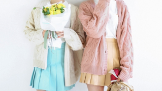
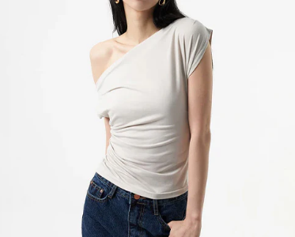

Home
Home
K-CHRONICLES: THE ART OF KOREAN FASHION
 Logout
Logout
issue No.14
Website Exclusive
October 7, 2024
Home
Logout
Pastels have become an integral part of Korean fashion for good reason. They are versatile, stylish, and give off a calm yet fashionable vibe. Whether you're new to pastels or looking to expand your wardrobe, incorporating these soft hues will instantly elevate your style. From blush pinks to baby blues, the pastel palette is a must-have for anyone who loves Korean fashion’s blend of modern and timeless trends.
Korean fashion often shies away from bold, loud colors, opting instead for softer shades that convey elegance and subtlety. Pastels like pink, lavender, and baby blue are particularly popular, giving outfits a refreshing yet polished look. These tones not only highlight the minimalist aspect of Korean style but also evoke a sense of calm and serenity.
Minimalist fashion offers a timeless and chic alternative to the bold and busy designs often seen in contemporary fashion. By focusing on clean lines, neutral colors, and high-quality pieces, you can create a wardrobe that’s versatile, functional, and effortlessly stylish. Whether you’re looking to simplify your style or embrace a more refined aesthetic, minimalism is a fashion choice that will never go out of style.

Bold, oversized patterns are here to stay, and they’re more versatile than ever. Whether you're adding a patterned piece to your everyday wardrobe or going all-out with a statement look, these designs allow you to have fun with fashion while expressing your personal style. So, don’t be afraid to experiment with stripes, florals, geometrics, and animal prints—your wardrobe will thank you for it.
How will you rock bold patterns this season? Let us know your favorite pieces and styling tips in the comments below!
StreetStyleLover: Such a great guide! I always struggle with layering but after reading this, I feel more confident to experiment. Also, I didn’t know STYLENANDA had streetwear pieces—definitely checking them out now!"
MinimalistMaven: Great post! The combination of oversized and tailored pieces is something I never thought to try, but it makes so much sense now. Any advice on how to pull off the dad sneaker trend?